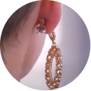

Βελτιώνει την εμφάνιση του λοβού του αυτιού
Βελτιώνει την εμφάνιση του λοβού του αυτιού

Τα Magicbax είναι ειδικά σχεδιασμένα για το στήριγμα των σκουλαρικιών. Αυτά τα ειδικά κλιπ εμποδίζουν τα σκουλαρίκια να χαλαρώσουν τον λοβό του αυτιού. Με αποτέλεσμα, τα σκουλαρίκια να ταιριάζουν ακριβώς όπως τα θέλετε.
Δεν χρειάζεται πλέον να ανησυχείτε για τον τέντωμα του λοβού ή για το άνοιγμα του μετά από πολλά χρόνια. Τώρα μπορείτε να δείχνετε πανέμορφοι και κομψοί με τα σκουλαρίκια που έχετε. Ακόμα και με τα πιο βαριά σκουλαρίκια! Αυτά τα ειδικά κλιπ γίνονται όλο και πιο δημοφιλείς στις γυναίκες σε όλο τον κόσμο κάθε μέρα.

Λειτουργικό αξεσουάρ Ανασηκώνουν τα σκουλαρίκια και αποτρέπουν το τέντωμα του λοβού, τα σκουλαρίκια φαίνονται πολύ πιο εντυπωσιακά.

Υποαλλεργικό Τα κλιπ δεν προκαλούν ερεθισμό του δέρματος ή αλλεργίες.

Ευκολία χρήσης Τα MagicBax ταιριάζουν σε οποιοδήποτε μέγεθος και σχέδιο σκουλαρικιών.

Ασφάλεια Τα κλιπ στερεώνουν σταθερά στα σκουλαρίκια, έτσι δεν θα ανησυχείτε μη τυχόν χαθούν τα σκουλαρίκια σας.

Εξαιρετική ποιότητα Κατασκευασμένο από ειδικό υλικό που θα διατηρήσει την τέλεια εμφάνισή του για πολλά χρόνια.
Παραγγελία


 Sunshine
Sunshine